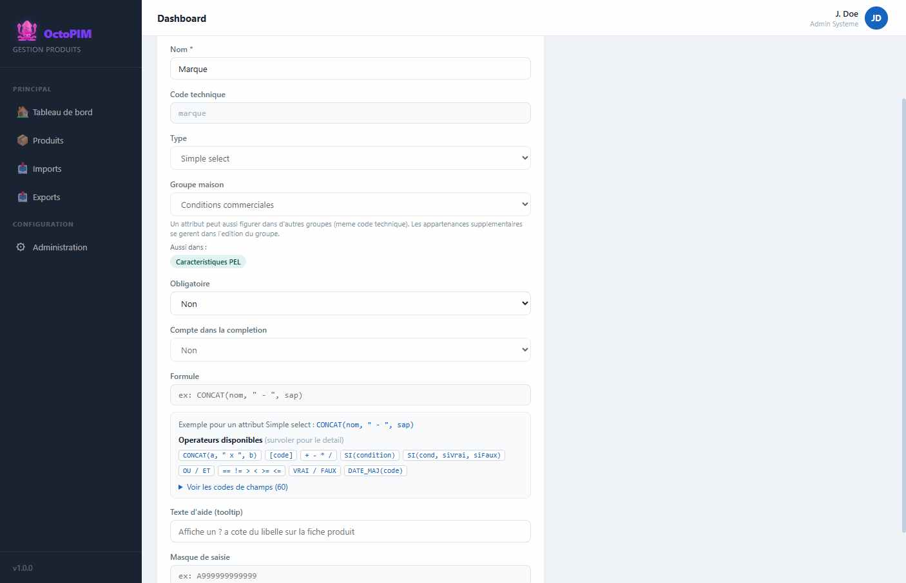
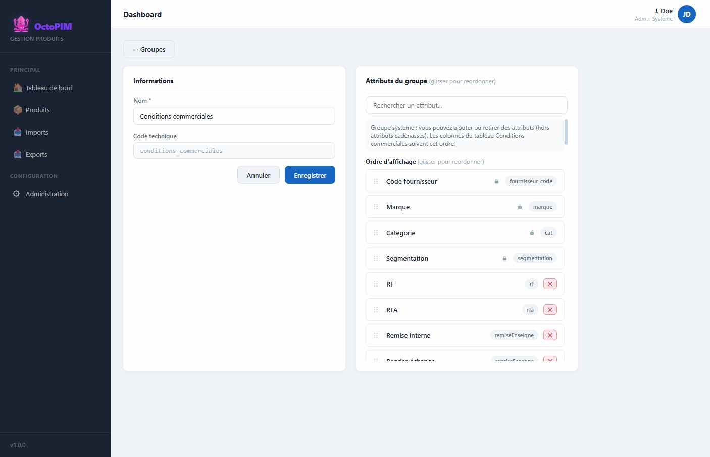
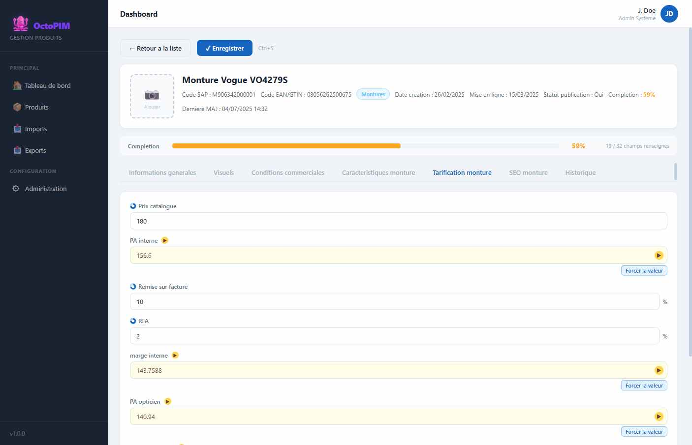

Gestion des attributs
Un attribut est le contrat d’un champ : libelle, identifiant, type de saisie, contraintes, parfois une formule. La valeur, elle, appartient au produit.
Qu’est-ce qu’un attribut ?
Un attribut est le contrat d’un champ : libelle metier, identifiant pour les echanges (import, export, formules), type de saisie, contraintes, eventuellement une formule. Ce n’est pas la valeur. La valeur appartient au produit (ou a une ligne de conditions commerciales).
Deux natures seulement :
- Systeme — non supprimable, non reparametrable (categorie, dates, marque, fournisseur, segmentation, completion).
- Classique — creable, modifiable, supprimable par l’administration.
Les endroits ou la valeur est stockee (fiche produit vs ligne de conditions) sont un detail d’implementation : ce n’est pas un troisieme type d’attribut.
Ou la valeur s’affiche
L’attribut se rattache a un ou plusieurs groupes. Sur la fiche, chaque groupe de la categorie du produit est un onglet, et le champ y apparait.

RG-A02 — Deux natures seulement : systeme et classique.
A quoi sert un attribut ?
- Standardiser la saisie (type, liste de valeurs, masque, obligatoire).
- Calculer des valeurs (nom marketing, tarifs, SEO, statut de publication).
- Mesurer la completude du catalogue (attributs « a completer », hors systeme).
- Permettre l’evolution du modele sans recoder (parametrage admin).
Rattachement : un attribut, un ou plusieurs groupes
A la creation, on choisit un groupe d’accueil. On peut ensuite l’ajouter a d’autres groupes sans dupliquer l’attribut. L’ajout a un second groupe se fait depuis la fiche du groupe (liste ordonnee), pas en recopiant l’objet.
Diagramme Mermaid (macro Confluence)
flowchart TB Attr[Attribut Marque] Attr --> G1[Groupe d'accueil - Conditions commerciales] Attr --> G2[Autre groupe - Caracteristiques PEL]



RG-A11 — Un champ peut n’apparaitre que si un autre champ a une valeur donnee (« Afficher seulement si »). Sans condition, il est toujours visible. Masque, il ne compte pas dans la completion. Le champ apparait des le changement de la valeur pilote, sans quitter la fiche. Miroir, Pola, Dégradé, Teinte des verres et Catégorie du verre ne s’affichent que si Optique / Solaire vaut Solaire, et ils se placent juste apres ce champ.
RG-A12 — Une nouvelle caracteristique de monture rejoint « Caracteristiques monture ». Une caracteristique qui n’existe que pour l’accessoire (matiere, dimensions, conditionnement d’origine, annee de lancement, designation magasin) rejoint « Caracteristiques accessoire ». Couleur est le meme attribut dans les deux groupes. La marque des lentilles est ce meme attribut Marque, en tete de Caracteristiques lentille. Un champ qui ne sert qu’a l’export IWI rejoint le groupe « IWI ».
RG-A04 — « Obligatoire » est le seul flag d’obligation. SAP n’est pas obligatoire.
RG-A05 — Le taux de completion ne compte que les champs saisissables, une fois chacun. Hors taux : systeme, calcules, visuels, commentaire. Le picto vaut pour tous les types, images comprises.
RG-A06 — Marque est le referentiel unique de marques, liste extensible a la saisie. Son code IWI fait 3 caracteres au maximum et sert uniquement a l’export IWI.
RG-A09 — Les pourcentages s’affichent en % et se stockent en decimal entre 0 et 1.
RG-A13 — Un nombre a 0, 1 ou 2 chiffres apres la virgule. Par defaut, 0 (arrondi). Prix catalogue, PA interne HT, marge interne HT, PA opticien HT et prix arrondi HT ont 2 chiffres. Le PVMC est arrondi a l’euro superieur (0 chiffre).
RG-A14 — Les codes IWI (type, sous-type, matiere, forme, utilisateur, marque, date de modification, code douanier, prescription, code marquage) sont des attributs calcules du groupe IWI. La date de modification vaut la date du jour au moment de l’affichage et de l’export. Action vaut toujours 1 : c’est une constante de la trame, pas un attribut. La matiere de branche reprend la matiere de face tant qu’il n’existe pas de champ branche. Le libelle « rondes/ovales/pantos » ne produit pas de code forme : il melange plusieurs codes IWI.
RG-A19 — Un attribut systeme s’ouvre en consultation. Aucun champ du panneau n’est modifiable, et Enregistrer n’est pas propose.
RG-A20 — Quitter l’edition d’un attribut avec des changements non enregistres demande confirmation.

Format d’un nombre
Sur un attribut de type Nombre, on choisit 0, 1 ou 2 chiffres apres la virgule. Sans choix, la valeur est arrondie (0 chiffre). Le meme format sert a l’ecran et a l’export.
- Prix catalogue, PA interne HT, marge interne HT, PA opticien HT, prix arrondi HT : 2 chiffres.
- Prix de vente TTC et prix de vente HT (lentilles et PEL) : 2 chiffres.
- Coefficient accessoire : 1 chiffre. La grille BDD va de 2 a 5, avec un pas de 0,1 (2,5, 3,4, 3,5).
- Matiere : Acetate, Métal, Titane, Plastique, Bois, Carbone. « Metal » et « Métal » sont la meme valeur, ecrite Métal.
- Style : Classique, Fashion, Sport.
- Profil de caractere : PFL0010 : Homme, PFL0030 : Mixte, PFL0020 : Femme, PFL0040 : Enfant.
- Teinte des verres, seulement en solaire : Brun, Gris, Rose, Vert.
- Catégorie du verre, seulement en solaire : Catégorie 1 a 4. A l’export IWI, seul le chiffre sort (1, 2, 3 ou 4).
- Groupe de marchandise : SI imbriques sur Optique / Solaire, la famille de matiere et le cerclage, avec le libelle de la table BDD (GM0010 a GM0180). MAP ne lit qu’un champ, CONCAT n’en choisit pas un parmi plusieurs : ils ne portent pas cette table. Bois et carbone n’y figurent pas : le champ reste vide. Cerclage : Cercle = cercle, nylor et semi-cercle = fils, sans cerclage = percee.
- Nom fournisseur est le fournisseur lie au produit (le nom, pas le code). Il n’y a pas d’attribut separe « Nom du fournisseur » dans le groupe IWI. Le code fabricant est le trigramme porte par ce fournisseur. Un MAP des codes figerait la liste et divergerait des qu’on modifie un trigramme.
- Remise sur facture et RFA ne sont pas des champs de tarification. Le PA opticien HT lit le prix catalogue, le RF et la RFA de l’accord : prix catalogue × (1 − RF) × (1 − RFA). C’est la formule de la colonne PA OPTICIEN de la BDD.
- Une formule ne change pas selon la categorie. Si la regle differe, c’est un champ dedie.
- La marge interne HT est PA opticien HT − PA interne HT. Le PVMC est le prix catalogue × 2,6 en optique, × 1,9 sinon, arrondi a l’euro superieur. Le prix arrondi HT est PVMC / 1,2. Ces quatre champs (avec le taux de marque) ne s’affichent que sur une monture.
- Sur un accessoire, le PV TTC arrondi est le prix opticien unitaire × coefficient, a l’euro superieur. Le PV HT est ce montant / 1,2. La marge HT est PV HT − prix opticien unitaire. Le taux accessoire est cette marge / PV HT.
- PA unitaire, PA par lot, prix opticien unitaire et prix opticien par lot sont saisis. Ils ne s’affichent que sur un accessoire. Prix catalogue, PA interne HT et PA opticien HT ne s’affichent que sur une monture.
- Prix de vente TTC et prix de vente HT sont les seuls prix du groupe Tarification lentilles + PEL. Le HT est le TTC / 1,2. Les deux ont 2 decimales.
- Actif canal O et actif canal L valent Oui, Non ou En attente. En attente n’est ni Oui ni Non : il ne publie pas le canal et ne force pas le reassort.
- Réassort automatique SAP (Activé, Désactivé, A désactiver), commande d’implantation envoyée (Oui / Non) et date de disponibilité produit sont dans les informations generales. Ils ne comptent pas dans la completion.
- Réassort automatique SAP passe à « A désactiver » quand actif canal O et actif canal L valent tous les deux Non. Un canal vide n’est pas Non. Dans les autres cas, la valeur choisie (Activé ou Désactivé) reste. La liste est verrouillée seulement le temps que les deux canaux sont Non.
- Type : Optique = A, Solaire = B.
- Sous-type : Cercle = A, semi-cercle et nylor = B, sans cerclage = C (percee dans la legende IWI).
- Type : Optique = A, Solaire = B, Clip = C, Masque = D, Prémontée = E. Ces cinq valeurs sont celles de la legende IWI.
- Code marquage : reference monture, espace, code couleur, espace, calibre et nez colles. Exemple : 33513 545 4821.
- Prescription : 0 pour une monture solaire, 1 pour une monture optique ou premontée.
- Code douanier IWI, 10 chiffres, en SI sur le type de monture et la matiere : optique ou premontée plastique 9003110010, optique ou premontée metal ou titane 9003190030, optique ou premontée bois ou carbone 9003190090, solaire plastique 9004109100, solaire metal, titane, bois ou carbone 9004109900. MAP et CONCAT ne portent pas un croisement de deux champs. Le champ « Code douanier » a 8 chiffres de la fiche BDD reste un attribut a part.
- Matiere de la branche : meme lettre que la face, tant qu’il n’existe pas de champ branche.
- Utilisateur : Homme = A, Femme = B, Enfant et Junior = C, Mixte = D (unisexe chez IWI).
- Forme : aviateur 1, carree 2, clubmaster 3, masque 4, ovale 5, papillon 8, rectangle 9, ronde 10. Le libelle « rondes/ovales/pantos » reste vide : il melange plusieurs codes.
- Marque : code IWI de la marque (3 caracteres au plus) puis le libelle, par exemple « 43 - Esprit ».
- Date de modification : la date du jour, recalculee a l’affichage et a l’export.
- Date de creation : la date de creation du produit.
- Action : toujours 1. Ce n’est pas un attribut, c’est une constante de la trame.
Champs calcules pour IWI
Listes et champs deduits
L’edition d’un attribut tient sur deux colonnes (identite, saisie) pour limiter le defilement. Quitter sans enregistrer demande confirmation. Un attribut systeme reste en lecture seule.
Les codes attendus par IWI sont des attributs calcules du groupe IWI. Ils se deduisent du champ metier, ils ne se saisissent pas.Saisie, limites et agencement
Un attribut classique se cree et se modifie dans l’administration. Un attribut systeme ne se supprime pas et ne se reparametre pas : son identifiant reste fige.
| Propriete | Regle |
|---|---|
| Types | Texte, texte long, nombre, date, liste simple, liste multiple, oui / non, image. |
| Obligatoire | Bloque l’enregistrement de la fiche et l’import si la valeur est vide. Les lignes de conditions commerciales ne sont pas exigees de cette facon sur la fiche. |
| Completion | Case separee de l’obligation. Un champ sans picto de completion est optionnel. Pas de pastille « Optionnel ». |
| Masque | Longueur exacte. A = lettre, 9 = chiffre, * = caractere quelconque, les autres signes sont litteraux. L’EAN est un masque de 14 chiffres. Le code IWI d’une marque est une longueur maximale de 3, pas un masque fixe. |
| Texte long | Longueur maximale parametrable. Pleine largeur sur la fiche. |
| Nombre | Minimum, maximum, pas d’increment optionnel. 0, 1 ou 2 decimales (voir plus haut). Un depassement de borne est ramene a la borne. |
| Date | Saisie jj/mm/aaaa. |
| Listes | Une option par ligne. La liste multiple stocke les valeurs choisies ensemble. |
| Image | Clic pour deposer un fichier. L’onglet Visuels liste les attributs image de son groupe (JPG, PNG, 2000 px de cote au minimum dans le rappel affiche). Cible le fichier vit dans Babil, pas dans le navigateur. |
| Aide | Texte d’aide affiche a cote du libelle. |
| Lecture seule | Valeur affichee, non saisissable (dates systeme). |
| Formule | CONCAT, SI, operations sur d’autres champs, DATE_MAJ (horodate le changement d’un champ), MAP (correspondance de valeurs), TODAY (date du jour). Deux passages pour les formules qui dependent d’une autre formule. |
| Champ calcule | Fond jaune, non saisi. On peut forcer une valeur produit par produit, puis revenir au calcul. Une valeur forcee prime sur la formule. |
| Formule | CONCAT, SI, operations sur d’autres champs, DATE_MAJ (horodate le changement d’un champ), MAP (correspondance de valeurs), ROUNDUP (arrondi a l’entier superieur), TODAY (date du jour). Deux passages pour les formules qui dependent d’une autre formule. |
| Agencement fiche | Les champs courts se rangent sur plusieurs colonnes. Texte long et image prennent toute la largeur. L’ordre est celui du groupe. |
| Ouvrir la fiche | Un attribut peut etre marque « clic pour ouvrir » : dans la liste, cliquer sa valeur ouvre le produit. Le nom l’est. |
RG-A16 — Un masque impose la longueur et la nature de chaque caractere. Il ne s’applique pas a un champ calcule ni en lecture seule.
RG-A17 — Un champ calcule se distingue visuellement et se met a jour des la saisie d’un champ dont il depend.
RG-A18 — Forcer une valeur calculee est un levier d’exception, trace par le fait que la valeur ne suit plus la formule jusqu’au retour au calcul.
Liste des attributs
Une ligne = un attribut. « Groupe d’accueil » = groupe choisi a la creation. « Aussi dans » = autres rattachements. Le detail des groupes est sur Groupes d’attributs.
| Identifiant | Libelle | Type de saisie | Groupe d’accueil | Aussi dans | Obligatoire | Qualite | Commentaire fonctionnel |
|---|